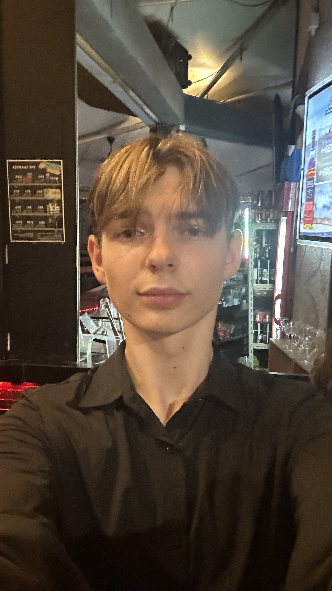
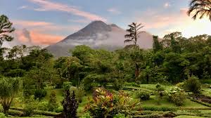

Hi, welcome to Aymeric's website;)
Yo! I'm Aymeric Steck, an 18-year-old French student straight out of France. Traveling? Absolutely love it, but chilling at home or kicking it with my crew is just as sweet. I'm all about keeping an open mind, devouring books, and diving into diverse interests. Big on sports, I smash it on the tennis courts and throw down in English Boxing. Let's connect! I am currently in Singapore where I study a degree in BBA at ESSEC Business School
Discover Me✈️TRAVEL✈️
Travels I'm passionate about travel, exploring diverse cultures, and connecting with new people. To me, roaming the globe offers more educational value than any classroom. Travel opens up opportunities to learn a new language, taste unique cuisines, understand different cultural nuances, or even gain a profound appreciation for faith and spirituality.
Traveling really broadens your perspective. It shows you that life doesn't have just one path. Meeting folks from various backgrounds illuminates how diverse world views can be, reminding us that our own way of seeing things isn't the only way.
I'm drawn to destinations with warm climates, like Costa Rica, Bali, Spain, Thailand, and Peru. However, my love for skiing and snowy landscapes also takes me to places like Zermatt, a ski resort in the Swiss Alps, where I've been going for years and plan to continue visiting. I feel incredibly fortunate to have experienced such a variety of landscapes around the world. Traveling is a treasure that enriches your life forever.


Sports
I am passionate about English Boxe, Tennis